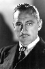

Country:United States, 79 minutes
Spoken languages:
Genres:Drama, Horror, Sci-Fi
Director(s):John S. Robertson
Writer(s):Robert Louis Stevenson, Clara Beranger
Video Codec:Unknown
Number: 67


Certification:NR
Storyline:
A doctor's research into the roots of evil turns him into a hideous depraved fiend.
Cast: 


Medium: Original DVD,
Comments: Part of: 100 Greatest Horror Classics
Loaned: No
Aspect ratio: Unknown